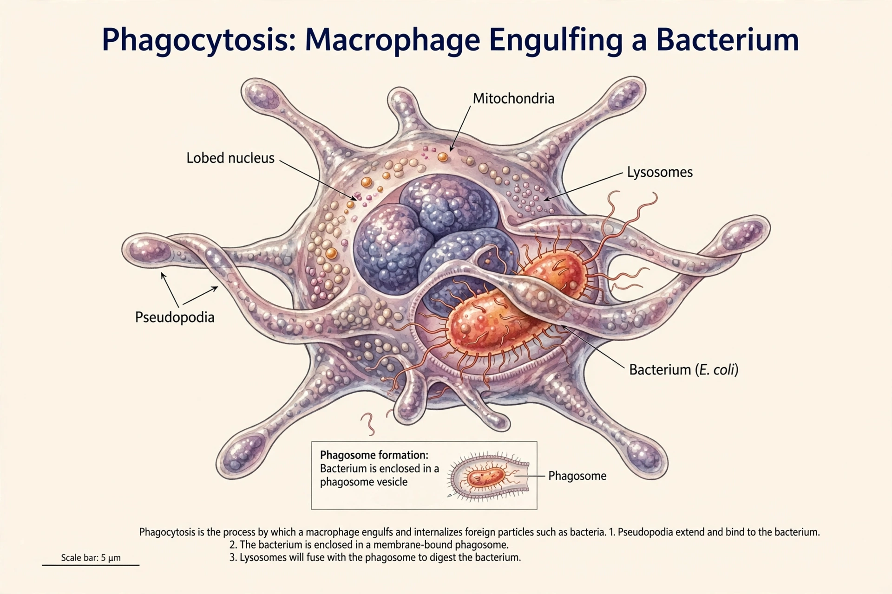

A macrophage is a type of white blood cell of the innate immune system that engulfs and digests pathogens, cellular debris, and foreign substances in a process called phagocytosis. Macrophages are found in virtually all tissues of the body, where they patrol for potential threats, clear away dead cells, and help initiate adaptive immune responses by presenting antigens to T cells.

| Macrophage | |
|---|---|
| System | Immune system |
| Precursor | Monocyte (from hematopoietic stem cells) |
| Function | Phagocytosis, antigen presentation, cytokine production |
| Discovered by | Élie Metchnikoff (1882) |
The Russian zoologist Élie Metchnikoff first identified macrophages in 1882 while studying starfish larvae, observing mobile cells that surrounded and engulfed foreign particles. He named them from the Greek makros ("large") and phagein ("to eat"). His phagocytic theory of immunity earned him a share of the 1908 Nobel Prize in Physiology or Medicine.
Most tissue-resident macrophages arise during embryonic development from yolk-sac and fetal-liver progenitors and maintain themselves by local self-renewal. Others derive from circulating blood monocytes, which are produced in the bone marrow and migrate into tissues during inflammation. Named resident populations include microglia in the brain, Kupffer cells in the liver, alveolar macrophages in the lungs, and osteoclasts in bone.
Macrophages adopt different functional states in response to their environment. Classically activated (M1) macrophages, induced by interferon-gamma and bacterial lipopolysaccharide, are strongly microbicidal and pro-inflammatory. Alternatively activated (M2) macrophages, induced by IL-4 and IL-13, are associated with parasite defence, tissue remodelling, and resolution of inflammation. This M1/M2 scheme is now understood to be a simplification of a continuous spectrum of states.
Macrophages contribute to many diseases. Foam cells — macrophages stuffed with oxidized cholesterol — form the core of atherosclerotic plaques (see hypercholesterolemia). Some pathogens, including Mycobacterium tuberculosis and HIV, can survive inside macrophages. Tumour-associated macrophages often suppress anti-tumour immunity and support cancer growth.